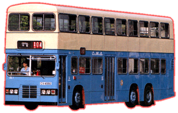
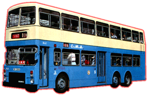
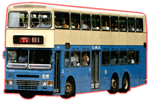

Dennis - Condor 12 Metre


 |
車隊編號 Model
引擎 Engine
容積 Engine Capacity
波箱 Gearbox
車身 Body Build
體積 Volume
載客量 Passenger
服役年份 Year |
: DL 1 - 48
: Gardner 6LXCT (220bhp)
: 10.45 Litres
: Voith DIWA851 (3-Speed Automatic)
: Duple-Metsec (DL 1, 3 - 48) Walter Alexander (Type RH) (DL 2)
: 11993L X 2500W X 4360H(mm) [DL 1,3-48] 11990L X 2450W X 4500H(mm) [DL 2]
: (DL 1) U75 L33 S63 (DL 2) U73 L35 S56 (DL 3 - 48) U72 L35 S60
: 1982 - 1999 |
丹尼士 (Dennis) 於 1982 年向中巴提供了兩部樣板 12 米 Condor 巴士，一部裝上都普 (Duple Metsec) 車身 [DL1]，而另一部裝上亞歷山大 (Walter Alexander) 車身 [DL2] 作試用，DL1 與 ML1 更成為全港最高載客量巴士 (171人)。其實 Dennis Condor 12m 是由 Dominator 骨子爲籃本，經加長及改良而型成 12m 版本。兩部新巴士同樣被派往行走過海線，中巴對其性能亦感滿意，但可能因為 MCW 12m 比較先入爲主關係，所以中巴 12m 巴士全都落在 MCW 手中。後來 MCW 這邊傳出倒閉消息，而中巴郤仍然對巴士有所需求，因而將巴士訂單都轉到丹尼士那邊去。到 1989 年全數 46 部配 Duple Metsec 車身巴士便陸續投入服務，大多數都以過海線爲主力。雖然在此之前九記那邊已有一定數量 Dennis 12m 車在行走，但 Dennis 公司能夠接到這遲來的訂單，逹 5 年之久，可算是得來不易，而且帶點幸運，若果 MCW 没有關閉，這訂單一定不會落入 Dennis 手中，以及日後購買新車的去向，也是未知數，加上有其他品牌競爭，誰會先倒閉更加是天曉得呢！(題外話﹕其實 Dennis & Leyland 都已經先後被別家公司收購了，也算是倒閉吧，往後再題！)
Condor 巴士每日都穿梭港九甚至新界，到了 1998 年由新巴接手，服務至到 99 年才全數退役，由於年時並不高 (除 DL1 & 2 外)，有很多都回到老家英國去，繼續其服務生涯。